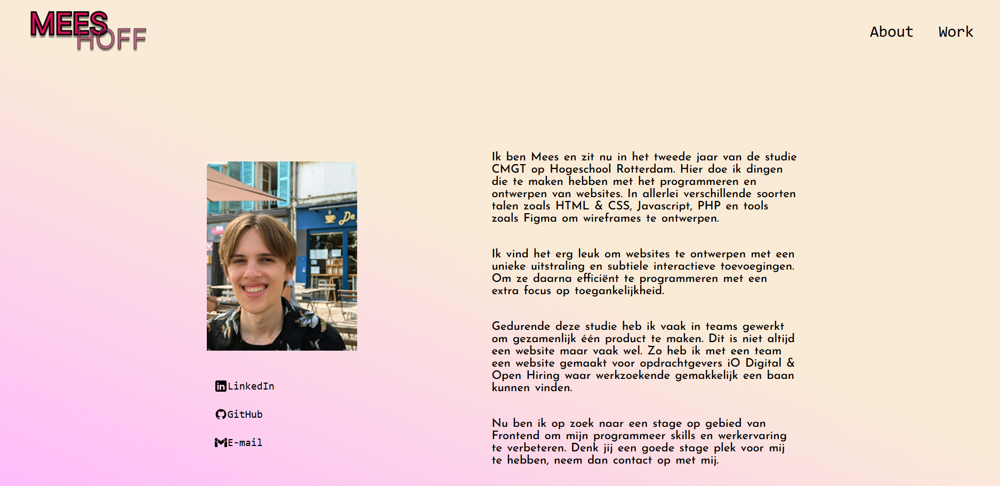
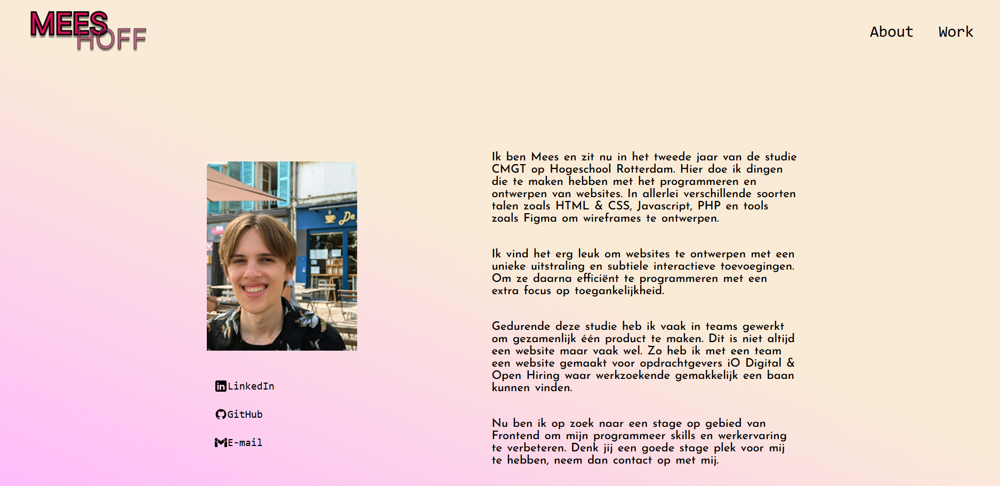

Dit portfolio heb ik in eerste instantie gemaakt voor een keuzevak op Hogeschool Rotterdam. Voordat ik aan dat keuzevak begon dacht ik dat het vooral was om te weten te komen hoe je goed een website kan maken voor online businesses, maar het bleek dat je ook een portfolio kon maken wat je kan gebruiken voor stage of werk. Wat heel handig uitkwam omdat ik opzoek ben naar een stage. Ook nu dit keuzevak voorbij is, houd ik mijn portfolio regelmatig bij met nieuwe projecten en informatie over mijzelf. Ik heb geprobeerd om deze website een unieke en simpele look te geven en ben blij met hou het eruit is komen te zien.